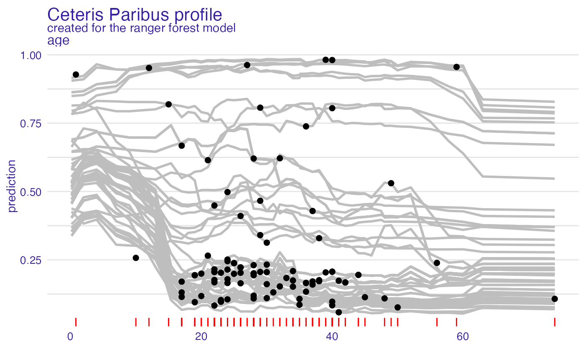

Function show_rugs adds a layer to a plot created with
plot.ceteris_paribus_explainer for selected observations.
Various parameters help to decide what should be plotted, profiles, aggregated profiles, points or rugs.
show_rugs(
x,
...,
size = 0.5,
alpha = 1,
color = "#371ea3",
variable_type = "numerical",
sides = "b",
variables = NULL
)a ceteris paribus explainer produced with function ceteris_paribus()
other explainers that shall be plotted together
a numeric. Size of lines to be plotted
a numeric between 0 and 1. Opacity of lines
a character. Either name of a color or name of a variable that should be used for coloring
a character. If numerical then only numerical variables will be plotted.
If categorical then only categorical variables will be plotted.
a string containing any of "trbl", for top, right, bottom, and left. Passed to geom rug.
if not NULL then only variables will be presented
a ggplot2 layer
Explanatory Model Analysis. Explore, Explain, and Examine Predictive Models. https://ema.drwhy.ai/
library("DALEX")
library("ingredients")
titanic_small <- select_sample(titanic_imputed, n = 500, seed = 1313)
# build a model
model_titanic_glm <- glm(survived ~ gender + age + fare,
data = titanic_small,
family = "binomial")
explain_titanic_glm <- explain(model_titanic_glm,
data = titanic_small[,-8],
y = titanic_small[,8])
#> Preparation of a new explainer is initiated
#> -> model label : lm ( default )
#> -> data : 500 rows 7 cols
#> -> target variable : 500 values
#> -> predict function : yhat.glm will be used ( default )
#> -> predicted values : No value for predict function target column. ( default )
#> -> model_info : package stats , ver. 4.2.2 , task classification ( default )
#> -> predicted values : numerical, min = 0.0795294 , mean = 0.302 , max = 0.9859411
#> -> residual function : difference between y and yhat ( default )
#> -> residuals : numerical, min = -0.8204691 , mean = 8.796651e-12 , max = 0.8567173
#> A new explainer has been created!
cp_glm <- ceteris_paribus(explain_titanic_glm, titanic_small[1,])
cp_glm
#> Top profiles :
#> gender age class embarked fare sibsp parch _yhat_ _vname_ _ids_
#> 515 female 45.00 2nd Southampton 10.1 0 0 0.5595687 gender 515
#> 515.1 male 45.00 2nd Southampton 10.1 0 0 0.1448038 gender 515
#> 5151 male 0.75 2nd Southampton 10.1 0 0 0.3135247 age 515
#> 515.110 male 2.99 2nd Southampton 10.1 0 0 0.3028164 age 515
#> 515.2 male 4.98 2nd Southampton 10.1 0 0 0.2934793 age 515
#> 515.3 male 7.00 2nd Southampton 10.1 0 0 0.2841757 age 515
#> _label_
#> 515 lm
#> 515.1 lm
#> 5151 lm
#> 515.110 lm
#> 515.2 lm
#> 515.3 lm
#>
#>
#> Top observations:
#> gender age class embarked fare sibsp parch _yhat_ _label_ _ids_
#> 515 male 45 2nd Southampton 10.1 0 0 0.1448038 lm 1
# \donttest{
library("ranger")
rf_model <- ranger(survived ~., data = titanic_imputed, probability = TRUE)
explainer_rf <- explain(rf_model,
data = titanic_imputed[,-8],
y = titanic_imputed[,8],
label = "ranger forest",
verbose = FALSE)
selected_passangers <- select_sample(titanic_imputed, n = 100)
cp_rf <- ceteris_paribus(explainer_rf, selected_passangers)
cp_rf
#> Top profiles :
#> gender age class embarked fare sibsp parch _yhat_
#> 515 female 45 2nd Southampton 10.1000 0 0 0.8130768
#> 515.1 male 45 2nd Southampton 10.1000 0 0 0.1134421
#> 604 female 17 3rd Southampton 7.1701 1 0 0.4691766
#> 604.1 male 17 3rd Southampton 7.1701 1 0 0.1146410
#> 1430 female 25 engineering crew Southampton 0.0000 0 0 0.7580796
#> 1430.1 male 25 engineering crew Southampton 0.0000 0 0 0.2382367
#> _vname_ _ids_ _label_
#> 515 gender 515 ranger forest
#> 515.1 gender 515 ranger forest
#> 604 gender 604 ranger forest
#> 604.1 gender 604 ranger forest
#> 1430 gender 1430 ranger forest
#> 1430.1 gender 1430 ranger forest
#>
#>
#> Top observations:
#> gender age class embarked fare sibsp parch _yhat_
#> 515 male 45 2nd Southampton 10.1000 0 0 0.1134421
#> 604 male 17 3rd Southampton 7.1701 1 0 0.1146410
#> 1430 male 25 engineering crew Southampton 0.0000 0 0 0.2382367
#> 865 male 20 3rd Cherbourg 7.0406 0 0 0.1177139
#> 452 female 17 3rd Queenstown 7.1408 0 0 0.6675361
#> 1534 male 38 victualling crew Southampton 0.0000 0 0 0.1723540
#> _label_ _ids_
#> 515 ranger forest 1
#> 604 ranger forest 2
#> 1430 ranger forest 3
#> 865 ranger forest 4
#> 452 ranger forest 5
#> 1534 ranger forest 6
plot(cp_rf, variables = "age", color = "grey") +
show_observations(cp_rf, variables = "age", color = "black") +
show_rugs(cp_rf, variables = "age", color = "red")

# }